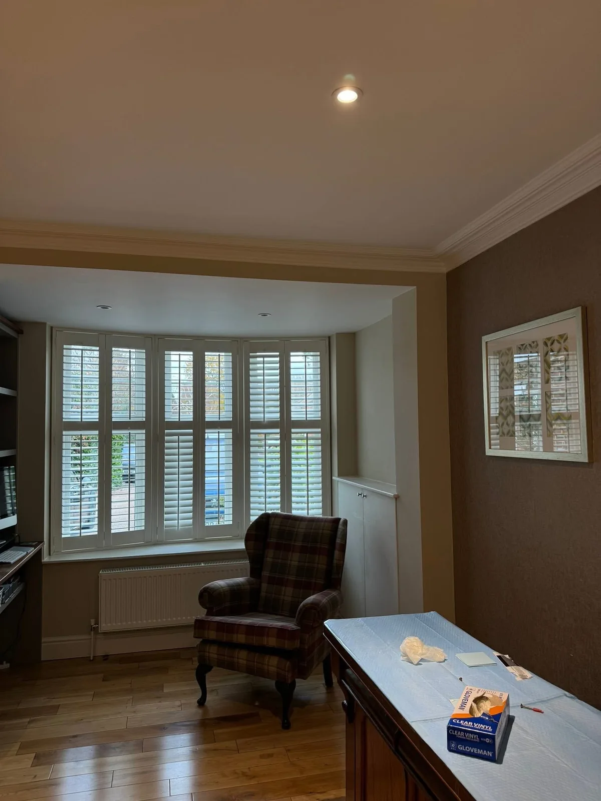
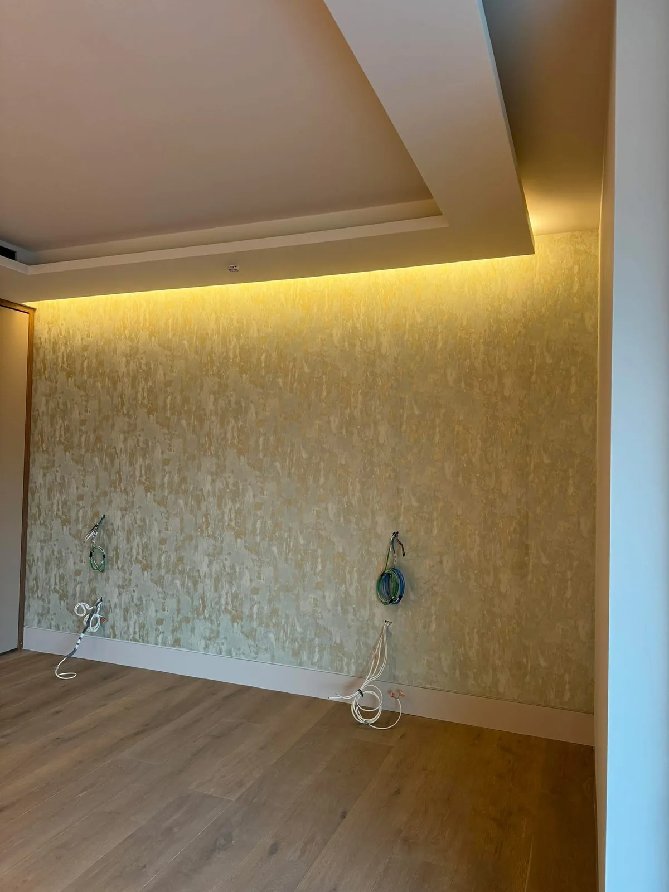
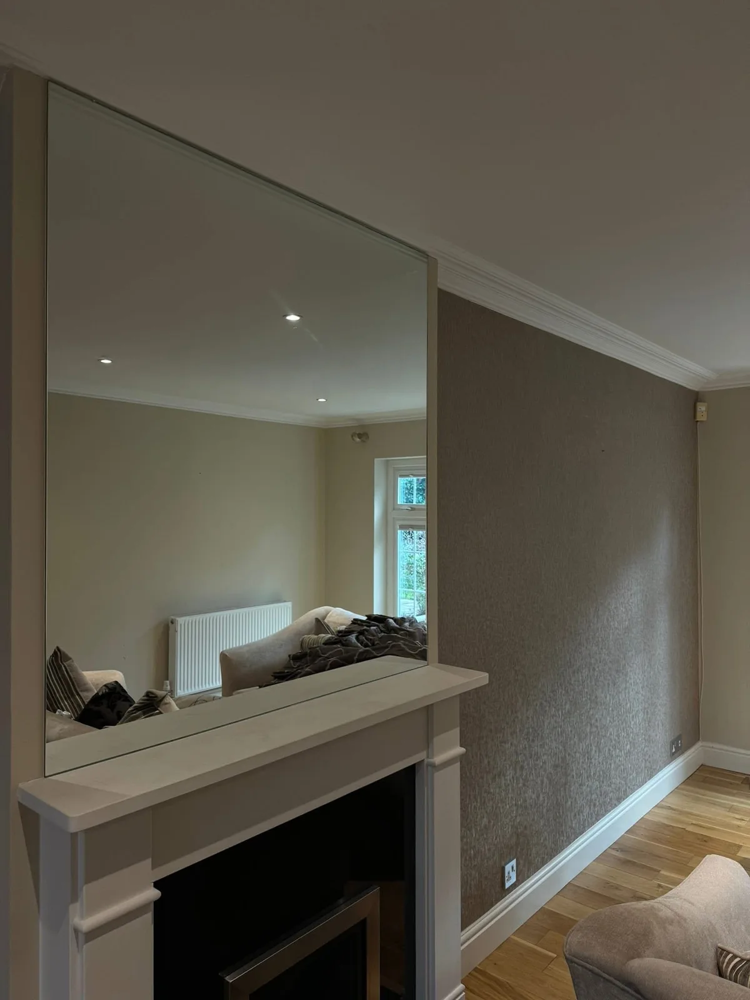
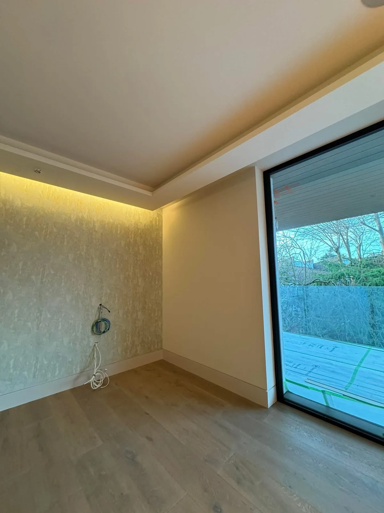
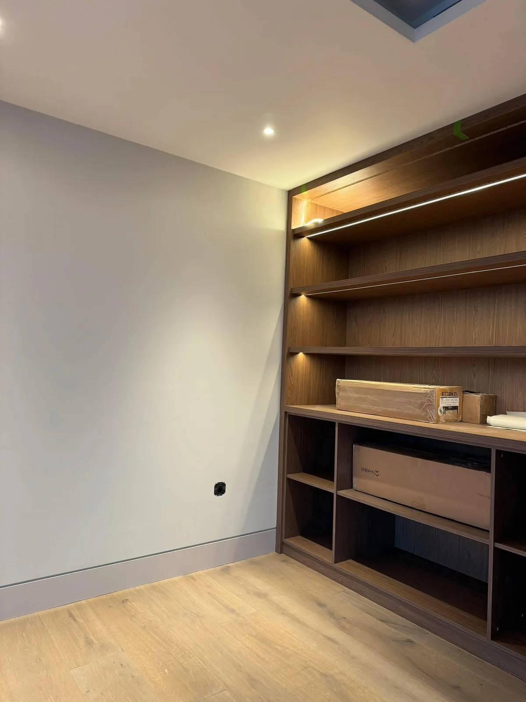
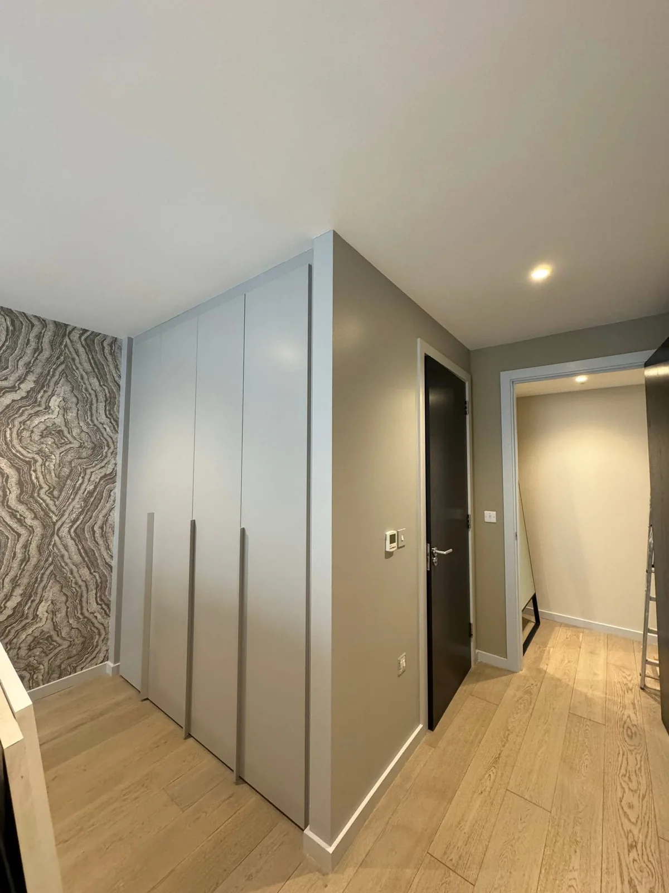
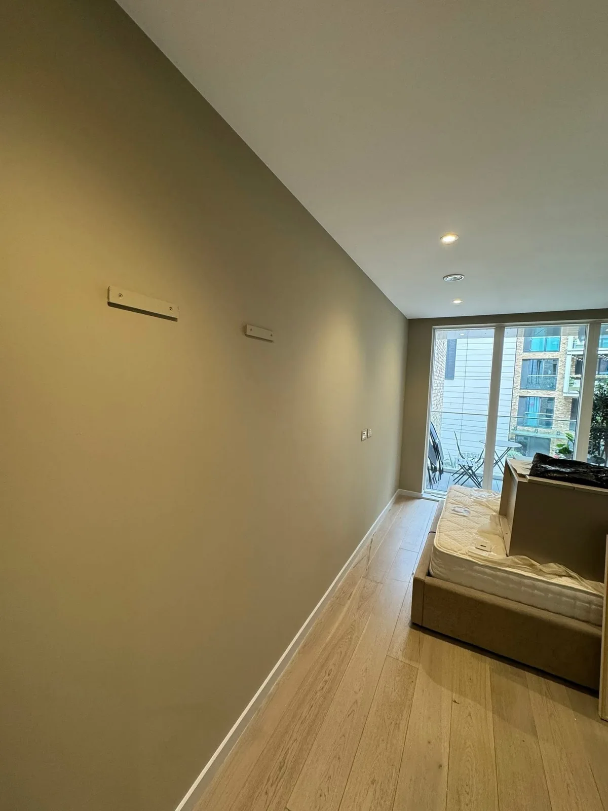
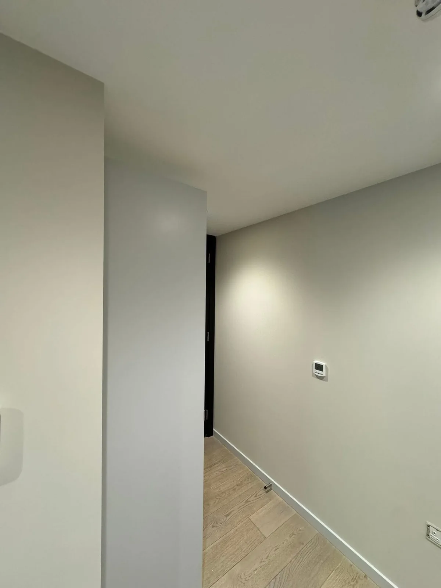

LUXURY PROFESSIONAL DECORATORS LTD
Interior Decorating.
Interior painting and decorating with attention to colour, preparation and the details that make a room feel complete.
Interior Painting & Decorating
Interior Decorating
From a single room to several connected spaces, the finish should work with the home around it. Share the colours and atmosphere you have in mind, the surfaces you would like to refresh and any details you want to retain.
Tell us about your project →

REFINEMENT, ROOM BY ROOM
Interior Finishes
The gallery includes pale wall finishes, crisp skirting, door surrounds and rooms with architectural detailing. Discuss the walls, ceilings and woodwork together so the scope is clear from the outset.
A conversation about your space →

THE PORTFOLIO
Recent Work
A selection of our projects. Open any photo to see the full image.



MEET CATALIN
About Catalin
“I’m Catalin, a skilled painter and decorator with over 25 years of experience.”
Luxury Professional Decorators LTD specialises in high-quality decorating and finishing, bringing elegance, precision and exceptional attention to detail to interior spaces.
Painting and decorating experience behind the work.
An eye for colour, surfaces and the way details meet.
Discuss your ideas and requirements with Catalin.
A FEW USEFUL DETAILS
Your Questions
Can I enquire about one room?
Yes. Describe the room or rooms you would like to discuss, with photos and your postcode.
What finishes can I see in the gallery?
The photographs include warm neutral walls, pale interior finishes, skirting, door surrounds and rooms with decorative details.
Can you help with a wider decorating project?
Tell Catalin about the complete project, including connected spaces and any deadlines, so the scope and availability can be discussed.
YOUR NEXT CHAPTER
Get a Quote
Share your plans, postcode and the finishes you have in mind. The form prepares a WhatsApp message to Catalin, where you can attach photographs before sending.
07503 396708LUXURY PROFESSIONAL DECORATORS LTD
Discuss Your Project
Contact Catalin to discuss your project and confirm availability for your postcode.